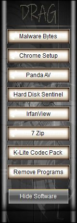
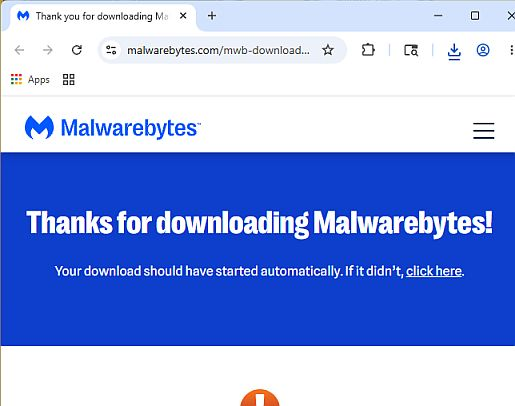
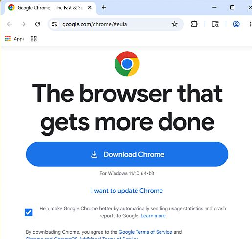
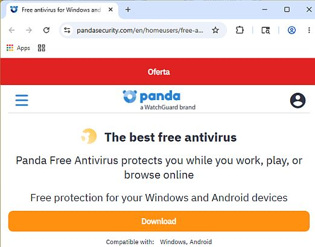
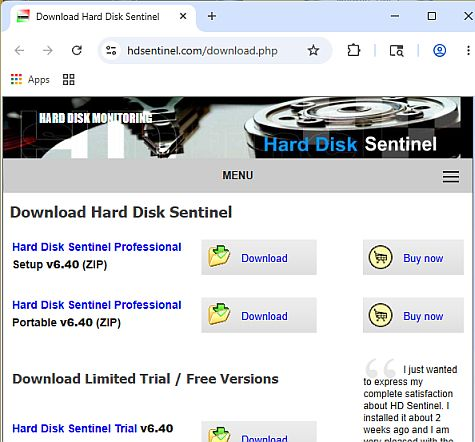
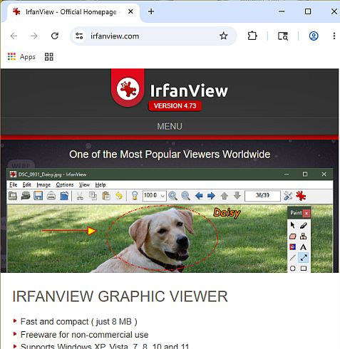
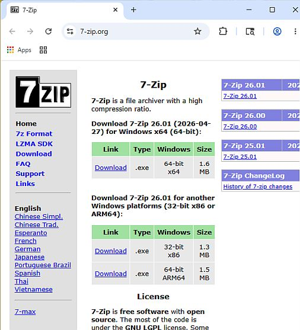
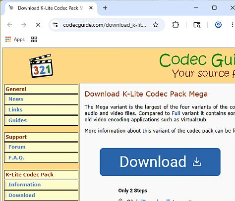
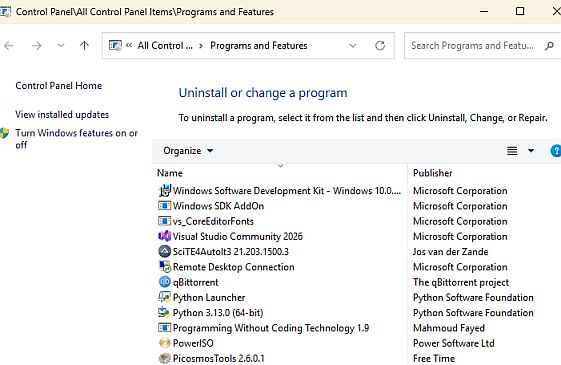

 |
Vics One app TechTool Software Window1: Malware Bytes 2: Chrome 3: Panda AntiVirus 4: Hard Disk Sentinal 5: Irfanview 6: 7 Zip 7: K-Lite Codec Packs 8: Remove Programs |
=========================================
Vics One app TechTool 1- MalwareBytesMalwarebytes is a highly popular cybersecurity software suite designed to detect and remove malicious software like viruses, ransomware, spyware, adware, and trojans. It works across multiple operating systems, including Windows, macOS, Android, and iOS |
=========================================
Vics One app TechTool 2- ChromeGoogle Chrome is a fast, free, and highly secure web browser developed by Google. It is the most popular browser in the world, available on Windows, macOS, Linux, Android, and iOS. Chrome syncs your bookmarks, history, and passwords across all your devices using your Google Account. |
=========================================
Vics One app TechTool 3- Panda AntiVirusPanda Dome Free: Includes essential real-time antivirus scanning for Windows and Android, USB drive automatic vaccination, and a limited secure VPN capped at 150MB of daily data usage. |
=========================================
| |
Vics One app TechTool 4- Hard Disk SentinelHDSentinel is a premier, multi-OS data protection and disk monitoring application designed to test, diagnose, and repair storage drive problems. Unlike basic tools that only read raw data, it interprets complex drive metrics to output a highly understandable health and performance percentage. |
=========================================
Vics One app TechTool 5- IrfanViewIrfanView is a remarkably fast, lightweight, and compact image viewer, editor, and converter designed exclusively for Microsoft Windows. Created by Irfan Skiljan in 1996, it is highly celebrated for its minimal file footprint (around 8 MB) and its ability to instantly open massive graphic files without lagging your computer hardware. |
=========================================
Vics One app TechTool 6- 7-Zip7-Zip can zip and unzip a wide range of compressed file archives: Full Packing and Unpacking: 7z, ZIP, GZIP, BZIP2, TAR, WIM, and XZ. Unpacking Only: RAR, CAB, ISO, DMG, VHD, MSI, EXE, and more. |
=========================================
Vics One app TechTool 7- K-Lite Codec PacksK-Lite Codec Pack is a comprehensive software bundle of audio and video codecs for Microsoft Windows. Codecs are system files that translate media data, allowing your computer to decode, read, and play back obscure or high-definition files that your operating system cannot open natively. |
=========================================
Vics One app TechTool 8- Programs and FeaturesAdd and Remove Programs |
=========================================